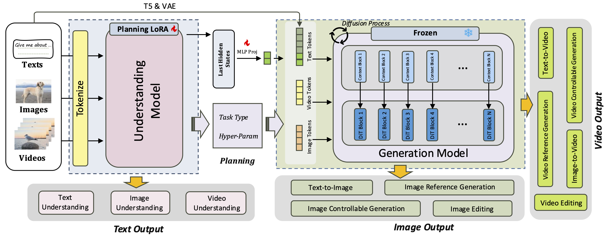
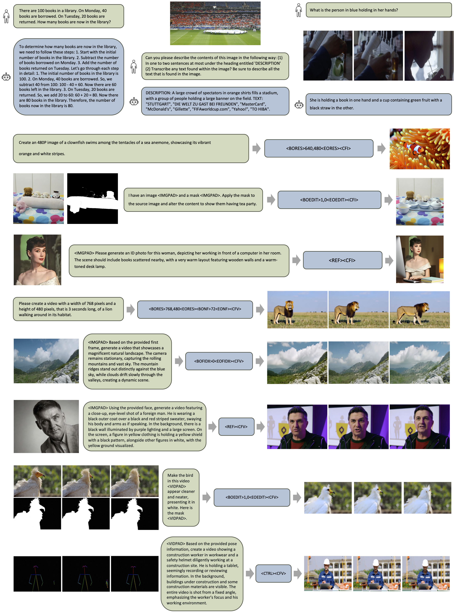
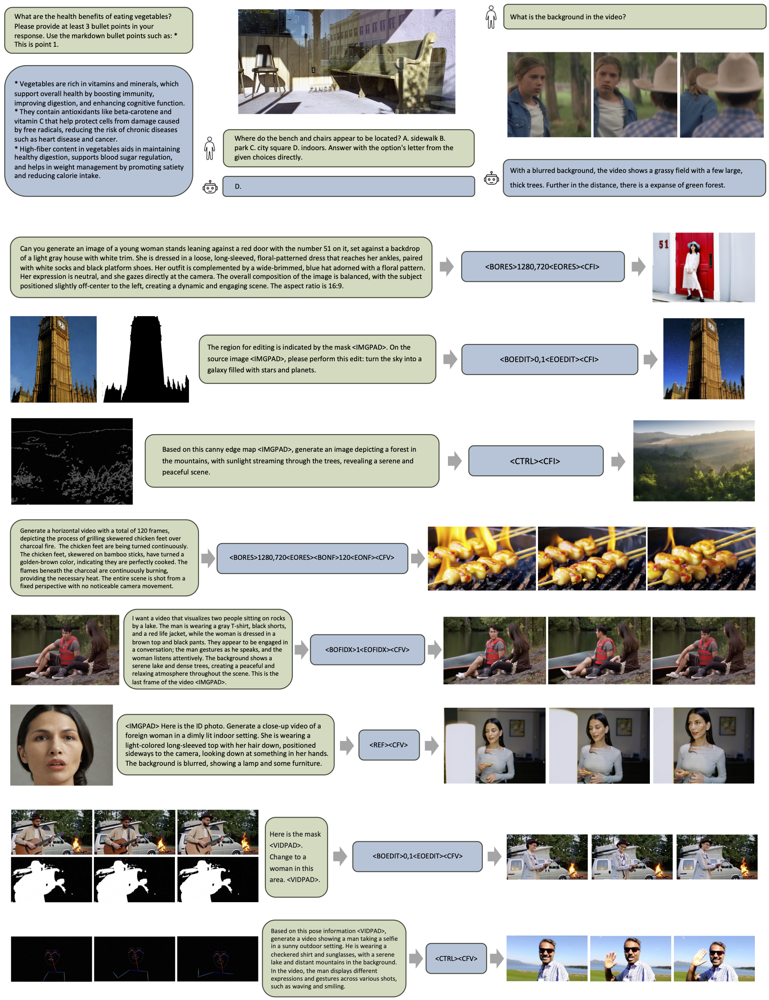
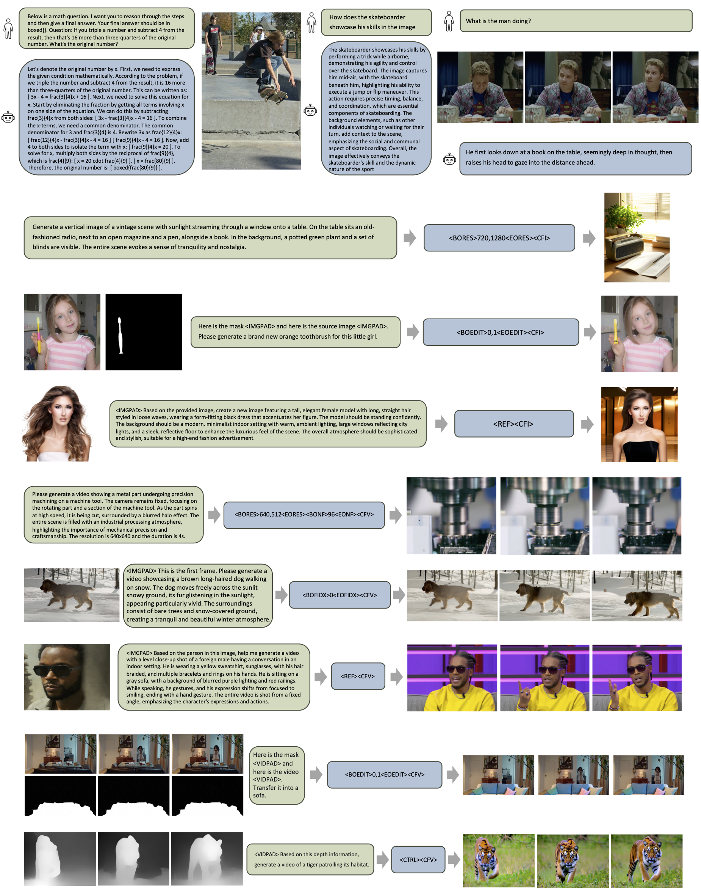

Overview
Unison is a two-stage framework for unified understanding and generation tasks. Trained at minimal cost with only 500K samples and 50 GPU hours, Unison supports a wide range of understanding tasks across text, image, and video, as well as generation tasks including text-to-visual generation, editing, controllable generation, and IP-based reference generation, totaling 12 types of tasks. Notably, Unison can automatically parse user intention, identify task types, and extract necessary meta-information, enabling full automation of multimodal workflows without human intervention.

Pipeline
Unison adopts a two-stage approach. In stage one, a pre-trained VLM is utilized for understanding, which is referred to as the understanding model. In stage two, a pre-trained generative model is employed for content generation, which is referred to as the generation model. Specifically, to achieve full automation, we construct planning data to fine-tune the understanding model using LoRA, enabling it to decouple the task and parameter information from user inputs. If the instruction is classified as an understanding task, the output of the stage-one understanding model is directly used as the final result. If the instruction is classified as a generation task, the decoupled information forms the hyper-parameters for the stage-two generation model to drive the generation process. To enhance cross-stage integration, we further leverage a trainable projector module to bridge the understanding and generation models for better alignment.
Visualization Results
For stage one, we adopted Qwen2.5-VL-3B-Instruct as the understanding model. For stage two, we employed Wan2.1-VACE-1.3B as the generation model. We trained a LoRA for the stage-one model and a projector for the stage-two model to align it with the stage-one model. The entire training utilized 500K data samples and was completed within 50 GPU hours.
In each figure, the top three cases demonstrate the model’s understanding of text, image, and video inputs. Here, the green boxes contain user inputs, while the blue boxes display the corresponding outputs. The lower cases illustrate tasks related to image and video generation. The leftmost section shows user inputs, where green boxes contain textual prompts, and content to the left of these boxes represents image, video, or mask conditions. The middle blue boxes present outputs from the stage-one model, which primarily consist of signal tokens guiding the generation tasks of the stage-two model. The right side displays the final generated results.
Visualization Results - Figure 1
Visualization Results - Figure 2
Visualization Results - Figure 3
